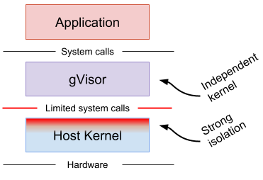

Containers 101
Containers from the ground up: what happens at boot, kernel and user space, virtual machines, then namespaces, cgroups and Linux containers.
You mean Docker?!! NOO!! the concept of containerzation was an old concept, even introuced by linux in "C-Groups" which are short for "Controled Groups."
Table of Content
What Happens When Power is on?
- Power On and POST (Power-On Self-Test):
- When you press the power button, the system's power supply provides electricity to the components, and the CPU receives its initial reset signal.
- The firmware (BIOS or UEFI) initializes, and the CPU executes a small piece of code stored in a special memory location called the BIOS/UEFI firmware.
- The firmware performs a series of diagnostic tests known as the Power-On Self-Test (POST) to check the hardware components (CPU, memory, storage, etc.) for functionality and ensure they're working correctly.
- Initialization and Hardware Detection:
- After the POST completes successfully, the firmware initializes various hardware components and devices connected to the system, such as the CPU, memory modules, storage devices (hard disk drives, solid-state drives), input/output devices (keyboard, mouse, display), and peripheral devices (USB drives, network adapters).
- The firmware identifies and initializes these components by accessing data stored in the system's BIOS or UEFI firmware settings.
- Boot Device Selection:
- The firmware determines the boot device from which to load the operating system. This can be configured in the system's BIOS or UEFI settings.
- The boot device is typically a storage device such as a hard disk drive (HDD), solid-state drive (SSD), or USB flash drive.
- Bootloader Execution:
- The firmware locates and executes the bootloader code stored in the boot sector of the selected boot device.
- The bootloader is responsible for loading the operating system kernel into memory and initiating its execution. This involves reading the kernel image from the storage device and transferring control to the kernel.
- Kernel Initialization:
- Once the bootloader loads the kernel into memory, the kernel initialization process begins.
- The kernel initializes various system components, such as the CPU, memory, device drivers, file systems, and networking.
- It sets up data structures, establishes system parameters, and configures hardware resources to prepare the system for normal operation.
- User Space Initialization:
- After the kernel initialization completes, the operating system transitions to user space.
- User-space initialization involves launching system services, daemons, and user applications necessary for the user to interact with the system.
- Graphical user interfaces (GUIs) or command-line interfaces (CLIs) may be started, depending on the system configuration and user preferences.
- User Login and System Operation:
- Finally, the system presents the user with a login prompt or desktop environment, allowing them to log in and start using the computer.
- Once logged in, the user can run applications, access files, browse the internet, and perform other tasks as needed.
+------------------------------------+
| User Space |
| +--------------------------+ |
| | User Applications | |
| +--------------------------+ |
+------------------------------------+
| Kernel Space |
| +--------------------------+ |
| | System Calls | |
| | Device Drivers | |
| | Process Management | |
| | Memory Management | |
| | File System | |
| | Networking | |
| +--------------------------+ |
+------------------------------------+
| Hardware |
| +--------------------------+ |
| | CPU (Processor) | |
| | Memory (RAM) | |
| | Storage (HDD/SSD) | |
| | Input Devices | |
| | Output Devices | |
| +--------------------------+ |
+------------------------------------+Kernel
Kernel is a piece of software in the OS, that serves as the bridge between the hardware and the rest of the system, responsible for shceduling processess to run, managing devices (read/write on disk and memory), ... etc.
Kernel Space & User Space
System memory in Linux can be divided into two distinct regions; kernel space and user space According to LINFO - user space definition & kernel space definition:
|Kernel Space|User Space |-|-| User space is that portion of system memory in which "user processess" run|Kernel space is that portion of memory in which kernel executes and provides its services. User processess are instances of all programs other than the kernel.</br>When a program is to be run, it is copied from storage into user space so that it can be accessed at high speed by the CPU|The kernel program that consititute the central core of a computer os, it is not a process, but rather a controller of processes, and it has complete control over everything that occurs on the system.M</br>This includes managing individual user processess within user space and preventing them from interfering with each other.
Hypervisor Virtual Machine
According to freecodecamp - demystifying containers 101:
A virtual machine is comprised of some level of hardware and kernel virtualization on which runs a guest operating system. a VM consist of two main parts [Hypervisor, guest kernel]:
- Hypervisor: is a piece of software that creates the virtualized hardware which may include the virtual [disk, network, CPU, ..etc].
- Guest Kernel: can talk to this virutal hardware.
A good note is that, Hypervisor can be hosted directly to the hardware without a host OS, in this case it is called Bare Metal Hypervisor VM.

From History to Container!
The journy as follows:
Cgroup "Controlled Groups": Linux kernel feature uses Linux namespaces {
PID: Process ID: ps aux,
net: Network: ip addr,
mnt: Mount,
uts: Unix Time Sharing,
ipc: Inter-Process Communication,
user,
}
Linux Containers (LXC)
Docker - 2013
Container Orchestration and Management - e.g. Kubernetes 2014What is a Namespace?!
From this example from 'jwl':
Say my wife has a sister named Sue, and so do I. How can I tell them apart in a conversation? By using their last names ("Sue Larson" vs "Sue Jones"). The last name is the namespace.
In programming, namespace is a feature used to :
- organize code elements [classes, functions, variables, types] into logical groups and containers.
- prevent naming conflicts and provide a way to encapsulate and modularize code.
Namespaces provide an isolation of processes and resources within a system; Linux namespaces are the fundamental feature of containerization!
From mikej:
So namespace provides a container to hold things like functions, classes and constants as a way to group them together logically and to help avoid conflicts with functions and classes with the same name that have been written by someone else.
Namespace in Linux?
In Linux systems, a namespace refers to a kernel feature that provides process isolation and virtualization of system resources. so Linux namesapce allow multiple processes to have their own unique views of certain system resources, such as process IDs, network interfaces, mount points, and more, within a single operating system instance.
For more info, check Linkedin-bolg.
Command unshare is used to create a new namespace or unshare an existing one; thereby isolating certain aspects of the system from the rest of the system.
Cgroups
It is a Linux kernel feature that uses Linux namespaces to isolate processes and resources. So Cgroups merges multiple namespaces toghether to achieve isolation.
While not an original feature, cgroups in Linux were eventually reworked to include a feature called *namespace isolation*.
The idea of Namespaces isolation in Linux is not new, as Linux has multiple kinds of namespace isolation. But Cgroups isolation is considered to a higher level of isolation to make sure processes within a cgroup namespace are independed.
So yes some consider cgroup as a namespace.
Linux Containers (LXC)
Taking advantage of cgroups, namespace isolation other kernel features to create a virtual environment with seperate process and networking space.
- [cgroup "merging namespace isolation" + Kernel features instead of creating its own kernel.]
This virutal environment has minimal overhead compared to traditional virtual machines.
Early version of Docker were build directly on the top of LXC.
Os of a Container?!
The OS of a container is in the form of an image. The image:
- is not a full operating system as the host.
- is just the file system and binaries for the OS.
The full host OS includes the file system, binaries, and the kernel.
How container become alive?
Let's take an example of Docker:
- When the container is booted, first thing to be done is from the repo, the image and its parent images are downloaded.
- The cgroup and namesapce are created.
- The image is used to create a virtual environment.
- From this point, the only files and binaries specified for the image, are the only files in the entire machine.
- The container main process is started, and the container is considered alive.
Containers Shares Kernel?
Docker says "Docker shares the Kernel of the Host"!! let's dive deep to explore more about this.
gVisor: Independed Kernel
To work on secured, efficient container, we can try to make the container uses an independed kernel, then consider gVisor from google.

References
- IBM tutorial to explain the concept of Containerization, found here.
- LINFO: The Linux Information Project. https://www.linfo.org/index.html
- Demystifying Containers 101: A Deep Dive Into Container Technology for Beginners freeCodeCamp. https://www.freecodecamp.org/news/demystifying-containers-101-a-deep-dive-into-container-technology-for-beginners-d7b60d8511c1/
- Scott McCarty. Redhat. Architecting Containers Part 1: Why Understanding User Space vs. Kernel Space Matters. 2015. https://www.redhat.com/en/blog/architecting-containers-part-1-why-understanding-user-space-vs-kernel-space-matters